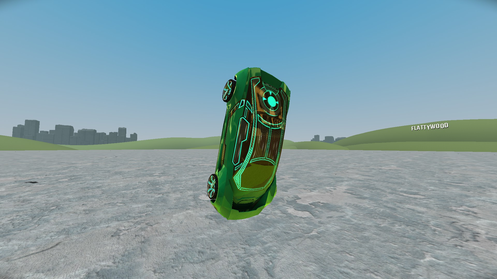
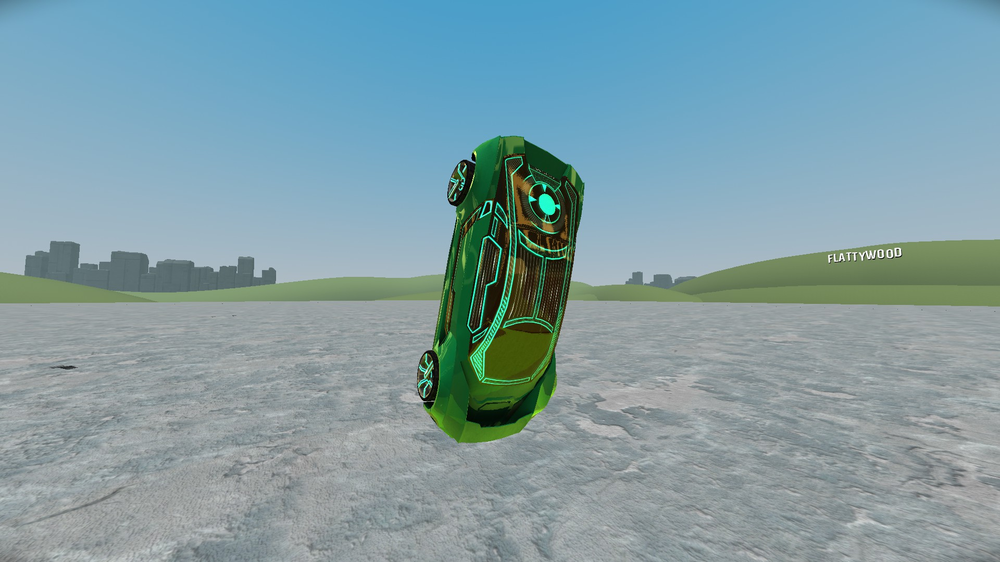

A Guide To Most Distance Mechanics
> NOSESTANDING
Okay, so I had to make a section for what is indisputably the most important mechanic in the game. Nosestanding is when you balance your car on the nose, so that the car stands upright. Here is an example of nosestanding:

There are many ways to nosestand, but first, I want to talk about surfaces, because the type of surface matters when trying to nosestand. If the surface you are trying to nosestand on is a spline (roads are usually splines), or an oldish object like an empire building or something like that, then nosestanding will be easier. Nosestanding will be harder on a golden simple though, because golden simples are a little bit more slippery. It's not impossible though! Larger objects are also usually harder to nosestand on.
The most conventional way to nosestand is to get your car upsidedown, use back thruster to push the car up, and then deactivate back thruster at just the right moment so that your remaining rotational momentum carries you close to an upward orientation. Then, you have three options. One, you can use boost, which should stabilize your nosestand if you are close enough to a balance. Two, you can activate wings at just the right moment, which should also stabilize your nosestand if you are close enough to a balance. Three, you can hold a side thruster, which should put you into a spinning nosestand. While a spinning nosestand is not as cool as a regular nosestand, due to the fact that the margin for error for preforming it is much less than that for preforming a regular one, you can still turn it into a regular nosestand. If you start boosting, then let go of the side thruster at the right moment, you should slow down into a regular nosestand. In my personal experience, doing a spinning nosestand into a regular nosestand is the easiest way to achieve a nosestand.
There are also special ways to nosestand. First is the instant nosestand strat, which should put you into a nosestand instantly if you do it right. It is done from a standstill, and works by turning in the air so you land in the nosestand state instantly. It looks like this:

It is about as hard to pull off as it is completely useless to do, and it is about as completely useless to do as it is completely awesome. There is also the sliding nosestand, in which you move while you nosestand. It looks like this:

This is also pretty much useless.

There are many ways to nosestand, but first, I want to talk about surfaces, because the type of surface matters when trying to nosestand. If the surface you are trying to nosestand on is a spline (roads are usually splines), or an oldish object like an empire building or something like that, then nosestanding will be easier. Nosestanding will be harder on a golden simple though, because golden simples are a little bit more slippery. It's not impossible though! Larger objects are also usually harder to nosestand on.
The most conventional way to nosestand is to get your car upsidedown, use back thruster to push the car up, and then deactivate back thruster at just the right moment so that your remaining rotational momentum carries you close to an upward orientation. Then, you have three options. One, you can use boost, which should stabilize your nosestand if you are close enough to a balance. Two, you can activate wings at just the right moment, which should also stabilize your nosestand if you are close enough to a balance. Three, you can hold a side thruster, which should put you into a spinning nosestand. While a spinning nosestand is not as cool as a regular nosestand, due to the fact that the margin for error for preforming it is much less than that for preforming a regular one, you can still turn it into a regular nosestand. If you start boosting, then let go of the side thruster at the right moment, you should slow down into a regular nosestand. In my personal experience, doing a spinning nosestand into a regular nosestand is the easiest way to achieve a nosestand.
There are also special ways to nosestand. First is the instant nosestand strat, which should put you into a nosestand instantly if you do it right. It is done from a standstill, and works by turning in the air so you land in the nosestand state instantly. It looks like this:
It is about as hard to pull off as it is completely useless to do, and it is about as completely useless to do as it is completely awesome. There is also the sliding nosestand, in which you move while you nosestand. It looks like this:
This is also pretty much useless.